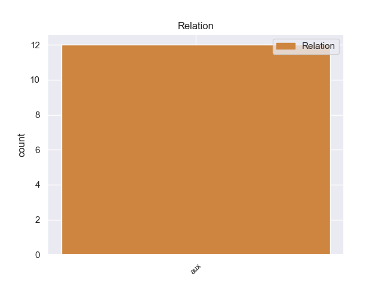
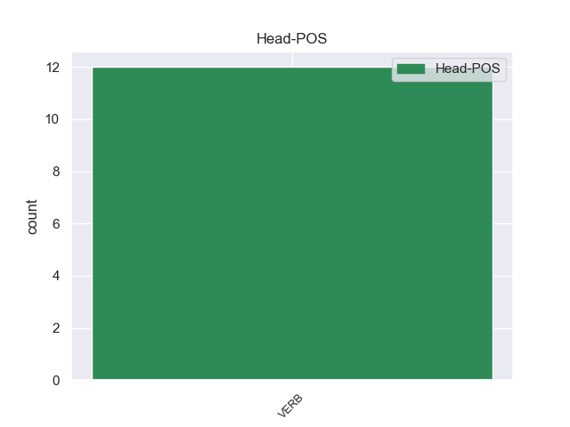
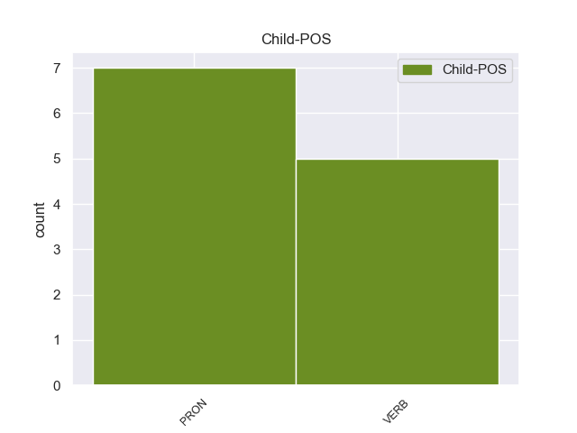

Distribution of features within this leaf



Agreement Rules sorted by frequency.
- When the dependent token is the auxiliary(aux) of the head token, and the dependent token is PRON.
1 " _ _ _ _ 0 _ _ _
2 Θα θα PRON _ Mood=Ind|Number=Plur|Person=1|Tense=Pres|VerbForm=Fin 3 aux _ _
3 καταβάλουμε καταβάλοer VERB _ Mood=Ind|Number=Sing|Person=1|Tense=Pres|VerbForm=Fin 0 _ _ _
4 κάθε _ _ _ _ 0 _ _ _
5 προσπάθεια _ _ _ _ 0 _ _ _
6 για _ _ _ _ 0 _ _ _
7 να _ _ _ _ 0 _ _ _
8 ολοκληρώσουμε _ _ _ _ 0 _ _ _
9 την _ _ _ _ 0 _ _ _
10 έρευνα _ _ _ _ 0 _ _ _
11 το _ _ _ _ 0 _ _ _
12 συντομότερο _ _ _ _ 0 _ _ _
13 δυνατόν _ _ _ _ 0 _ _ _
14 γιατί _ _ _ _ 0 _ _ _
15 το _ _ _ _ 0 _ _ _
16 Βιετνάμ _ _ _ _ 0 _ _ _
17 έχει _ _ _ _ 0 _ _ _
18 πραγματικά _ _ _ _ 0 _ _ _
19 ανάγκη _ _ _ _ 0 _ _ _
20 το _ _ _ _ 0 _ _ _
21 εμβόλιο _ _ _ _ 0 _ _ _
22 αυτό _ _ _ _ 0 _ _ _
23 " _ _ _ _ 0 _ _ _
24 , _ _ _ _ 0 _ _ _
25 τόνισε _ _ _ _ 0 _ _ _
26 η _ _ _ _ 0 _ _ _
27 Νγκουγέν _ _ _ _ 0 _ _ _
28 Τι _ _ _ _ 0 _ _ _
29 Χονγκ _ _ _ _ 0 _ _ _
30 Χανχ _ _ _ _ 0 _ _ _
31 αναπληρώτρια _ _ _ _ 0 _ _ _
32 διευθύντρια _ _ _ _ 0 _ _ _
33 του _ _ _ _ 0 _ _ _
34 Εθνικού _ _ _ _ 0 _ _ _
35 Ινστιτούτου _ _ _ _ 0 _ _ _
36 Επιδημιολογίας _ _ _ _ 0 _ _ _
37 . _ _ _ _ 0 _ _ _
1 Το _ _ _ _ 0 _ _ _
2 μόνο _ _ _ _ 0 _ _ _
3 συνεπώς _ _ _ _ 0 _ _ _
4 που _ _ _ _ 0 _ _ _
5 μπορούσαν _ _ _ _ 0 _ _ _
6 να _ _ _ _ 0 _ _ _
7 κάνουν _ _ _ _ 0 _ _ _
8 ήταν _ _ _ _ 0 _ _ _
9 ν' _ _ _ _ 0 _ _ _
10 αυξήσουν _ _ _ _ 0 _ _ _
11 την _ _ _ _ 0 _ _ _
12 επιρροή _ _ _ _ 0 _ _ _
13 τους _ _ _ _ 0 _ _ _
14 σ _ _ _ _ 0 _ _ _
15 τους _ _ _ _ 0 _ _ _
16 πληθυσμούς _ _ _ _ 0 _ _ _
17 της _ _ _ _ 0 _ _ _
18 περιοχής _ _ _ _ 0 _ _ _
19 , _ _ _ _ 0 _ _ _
20 παράλληλα _ _ _ _ 0 _ _ _
21 μ' _ _ _ _ 0 _ _ _
22 εκείνη _ _ _ _ 0 _ _ _
23 προς _ _ _ _ 0 _ _ _
24 τον _ _ _ _ 0 _ _ _
25 Σουλτάνο _ _ _ _ 0 _ _ _
26 σ _ _ _ _ 0 _ _ _
27 τη _ _ _ _ 0 _ _ _
28 Κωνσταντινούπολη _ _ _ _ 0 _ _ _
29 , _ _ _ _ 0 _ _ _
30 για _ _ _ _ 0 _ _ _
31 όσο _ _ _ _ 0 _ _ _
32 χρόνο _ _ _ _ 0 _ _ _
33 θα _ _ _ _ 0 _ _ _
34 " _ _ _ _ 0 _ _ _
35 παρέμενε _ _ _ _ 0 _ _ _
36 " _ _ _ _ 0 _ _ _
37 ( _ _ _ _ 0 _ _ _
38 ή _ _ _ _ 0 _ _ _
39 θα _ _ _ _ 0 _ _ _
40 του _ _ _ _ 0 _ _ _
41 επέτρεπαν _ _ _ _ 0 _ _ _
42 ) _ _ _ _ 0 _ _ _
43 τη _ _ _ _ 0 _ _ _
44 συνέχεια _ _ _ _ 0 _ _ _
45 της _ _ _ _ 0 _ _ _
46 Αυτοκρατορίας _ _ _ _ 0 _ _ _
47 του _ _ _ _ 0 _ _ _
48 , _ _ _ _ 0 _ _ _
49 προκειμένου _ _ _ _ 0 _ _ _
50 να _ _ _ _ 0 _ _ _
51 είναι _ _ _ _ 0 _ _ _
52 έτοιμες _ _ _ _ 0 _ _ _
53 να _ _ _ _ 0 _ _ _
54 υποστηρίξουν _ _ _ _ 0 _ _ _
55 ένα _ _ _ _ 0 _ _ _
56 ή _ _ _ _ 0 _ _ _
57 περισσότερους _ _ _ _ 0 _ _ _
58 από _ _ _ _ 0 _ _ _
59 τους _ _ _ _ 0 _ _ _
60 διαδόχους _ _ _ _ 0 _ _ _
61 του _ _ _ _ 0 _ _ _
62 οθωμανικού _ _ _ _ 0 _ _ _
63 καθεστώτος _ _ _ _ 0 _ _ _
64 που _ _ _ _ 0 _ _ _
65 θα _ _ _ _ 0 _ _ _
66 μπορούσαν μπορούer VERB _ Mood=Ind|Number=Plur|Person=3|Tense=Imp|VerbForm=Fin 68 aux _ _
67 να _ _ _ _ 0 _ _ _
68 ήταν ήτr VERB _ Mood=Ind|Number=Plur|Person=3|Tense=Imp|VerbForm=Fin 0 _ _ _
69 οι _ _ _ _ 0 _ _ _
70 Σέρβοι _ _ _ _ 0 _ _ _
71 , _ _ _ _ 0 _ _ _
72 οι _ _ _ _ 0 _ _ _
73 Έλληνες _ _ _ _ 0 _ _ _
74 , _ _ _ _ 0 _ _ _
75 οι _ _ _ _ 0 _ _ _
76 Βούλγαροι _ _ _ _ 0 _ _ _
77 , _ _ _ _ 0 _ _ _
78 οι _ _ _ _ 0 _ _ _
79 Αλβανοί _ _ _ _ 0 _ _ _
80 , _ _ _ _ 0 _ _ _
81 ακόμα _ _ _ _ 0 _ _ _
82 και _ _ _ _ 0 _ _ _
83 οι _ _ _ _ 0 _ _ _
84 γηγενείς _ _ _ _ 0 _ _ _
85 Μακεδόνες _ _ _ _ 0 _ _ _
86 , _ _ _ _ 0 _ _ _
87 που _ _ _ _ 0 _ _ _
88 οι _ _ _ _ 0 _ _ _
89 πιθανότητές _ _ _ _ 0 _ _ _
90 να _ _ _ _ 0 _ _ _
91 ιδρύσουν _ _ _ _ 0 _ _ _
92 ανεξάρτητα _ _ _ _ 0 _ _ _
93 έθνη _ _ _ _ 0 _ _ _
94 δεν _ _ _ _ 0 _ _ _
95 ήταν _ _ _ _ 0 _ _ _
96 και _ _ _ _ 0 _ _ _
97 εντελώς _ _ _ _ 0 _ _ _
98 ανύπαρκτες _ _ _ _ 0 _ _ _
99 . _ _ _ _ 0 _ _ _
Disagree Examples:
1 Θα θer PRON _ Mood=Ind|Number=Plur|Person=1|Tense=Pres|VerbForm=Fin 2 aux _ _
2 έχουμε έχοer VERB _ Gender=Masc|Number=Sing|Tense=Past|VerbForm=Part 0 _ _ _
3 πολλές _ _ _ _ 0 _ _ _
4 ακόμη _ _ _ _ 0 _ _ _
5 συζητήσεις _ _ _ _ 0 _ _ _
6 με _ _ _ _ 0 _ _ _
7 την _ _ _ _ 0 _ _ _
8 κ. _ _ _ _ 0 _ _ _
9 Thorning-Schmidt _ _ _ _ 0 _ _ _
10 και _ _ _ _ 0 _ _ _
11 άλλους _ _ _ _ 0 _ _ _
12 συναδέλφους _ _ _ _ 0 _ _ _
13 σχετικά _ _ _ _ 0 _ _ _
14 με _ _ _ _ 0 _ _ _
15 την _ _ _ _ 0 _ _ _
16 αύξηση _ _ _ _ 0 _ _ _
17 των _ _ _ _ 0 _ _ _
18 απαιτήσεων _ _ _ _ 0 _ _ _
19 προκειμένου _ _ _ _ 0 _ _ _
20 να _ _ _ _ 0 _ _ _
21 βελτιωθεί _ _ _ _ 0 _ _ _
22 η _ _ _ _ 0 _ _ _
23 ασφάλεια _ _ _ _ 0 _ _ _
24 και _ _ _ _ 0 _ _ _
25 η _ _ _ _ 0 _ _ _
26 υγεία _ _ _ _ 0 _ _ _
27 των _ _ _ _ 0 _ _ _
28 εργαζομένων _ _ _ _ 0 _ _ _
29 . _ _ _ _ 0 _ _ _
1 Οι _ _ _ _ 0 _ _ _
2 συμφωνίες _ _ _ _ 0 _ _ _
3 εταιρικής _ _ _ _ 0 _ _ _
4 σχέσης _ _ _ _ 0 _ _ _
5 και _ _ _ _ 0 _ _ _
6 συνεργασίας _ _ _ _ 0 _ _ _
7 που _ _ _ _ 0 _ _ _
8 έχουμε έχοer VERB _ Mood=Ind|Number=Plur|Person=3|Tense=Pres|VerbForm=Fin 9 aux _ _
9 συνάψει συνάψει VERB _ Gender=Masc|Number=Sing|Tense=Past|VerbForm=Part 0 _ _ _
10 με _ _ _ _ 0 _ _ _
11 καθεμία _ _ _ _ 0 _ _ _
12 από _ _ _ _ 0 _ _ _
13 τις _ _ _ _ 0 _ _ _
14 τρεις _ _ _ _ 0 _ _ _
15 χώρες _ _ _ _ 0 _ _ _
16 παρέχουν _ _ _ _ 0 _ _ _
17 μια _ _ _ _ 0 _ _ _
18 ενιαία _ _ _ _ 0 _ _ _
19 βάση _ _ _ _ 0 _ _ _
20 για _ _ _ _ 0 _ _ _
21 τη _ _ _ _ 0 _ _ _
22 συνεργασία _ _ _ _ 0 _ _ _
23 σε _ _ _ _ 0 _ _ _
24 ένα _ _ _ _ 0 _ _ _
25 ευρύ _ _ _ _ 0 _ _ _
26 φάσμα _ _ _ _ 0 _ _ _
27 πεδίων _ _ _ _ 0 _ _ _
28 , _ _ _ _ 0 _ _ _
29 από _ _ _ _ 0 _ _ _
30 τον _ _ _ _ 0 _ _ _
31 πολιτικό _ _ _ _ 0 _ _ _
32 διάλογο _ _ _ _ 0 _ _ _
33 , _ _ _ _ 0 _ _ _
34 το _ _ _ _ 0 _ _ _
35 εμπόριο _ _ _ _ 0 _ _ _
36 και _ _ _ _ 0 _ _ _
37 τις _ _ _ _ 0 _ _ _
38 επενδύσεις _ _ _ _ 0 _ _ _
39 μέχρι _ _ _ _ 0 _ _ _
40 τις _ _ _ _ 0 _ _ _
41 σχέσεις _ _ _ _ 0 _ _ _
42 με _ _ _ _ 0 _ _ _
43 την _ _ _ _ 0 _ _ _
44 κοινωνία _ _ _ _ 0 _ _ _
45 των _ _ _ _ 0 _ _ _
46 πολιτών _ _ _ _ 0 _ _ _
47 . _ _ _ _ 0 _ _ _
1 Θα θα PRON _ Mood=Ind|Number=Plur|Person=1|Tense=Pres|VerbForm=Fin 2 aux _ _
2 έχουμε έχοer VERB _ Gender=Masc|Number=Sing|Tense=Past|VerbForm=Part 0 _ _ _
3 νέα _ _ _ _ 0 _ _ _
4 πεδία _ _ _ _ 0 _ _ _
5 καθηκόντων _ _ _ _ 0 _ _ _
6 και _ _ _ _ 0 _ _ _
7 φυσικά _ _ _ _ 0 _ _ _
8 η _ _ _ _ 0 _ _ _
9 διεύρυνση _ _ _ _ 0 _ _ _
10 θα _ _ _ _ 0 _ _ _
11 αποτελέσει _ _ _ _ 0 _ _ _
12 μια _ _ _ _ 0 _ _ _
13 νέα _ _ _ _ 0 _ _ _
14 και _ _ _ _ 0 _ _ _
15 μεγάλη _ _ _ _ 0 _ _ _
16 πρόκληση _ _ _ _ 0 _ _ _
17 για _ _ _ _ 0 _ _ _
18 τη _ _ _ _ 0 _ _ _
19 δημοσιονομική _ _ _ _ 0 _ _ _
20 διαχείριση _ _ _ _ 0 _ _ _
21 . _ _ _ _ 0 _ _ _
1 Θα θα PRON _ Mood=Ind|Number=Plur|Person=1|Tense=Pres|VerbForm=Fin 2 aux _ _
2 περιέχει περιέχειr VERB _ Gender=Masc|Number=Sing|Tense=Past|VerbForm=Part 0 _ _ _
3 πιθανώς _ _ _ _ 0 _ _ _
4 μια _ _ _ _ 0 _ _ _
5 ρήτρα _ _ _ _ 0 _ _ _
6 , _ _ _ _ 0 _ _ _
7 σύμφωνα _ _ _ _ 0 _ _ _
8 με _ _ _ _ 0 _ _ _
9 την _ _ _ _ 0 _ _ _
10 οποία _ _ _ _ 0 _ _ _
11 θα _ _ _ _ 0 _ _ _
12 τεθεί _ _ _ _ 0 _ _ _
13 σε _ _ _ _ 0 _ _ _
14 ισχύ _ _ _ _ 0 _ _ _
15 τον _ _ _ _ 0 _ _ _
16 Οκτώβριο_του_2003 _ _ _ _ 0 _ _ _
17 και _ _ _ _ 0 _ _ _
18 έχουμε _ _ _ _ 0 _ _ _
19 λάβει _ _ _ _ 0 _ _ _
20 υπόψη _ _ _ _ 0 _ _ _
21 επίσης _ _ _ _ 0 _ _ _
22 την _ _ _ _ 0 _ _ _
23 κατάσταση _ _ _ _ 0 _ _ _
24 των _ _ _ _ 0 _ _ _
25 υφιστάμενων _ _ _ _ 0 _ _ _
26 εμπόρων _ _ _ _ 0 _ _ _
27 εισάγοντας _ _ _ _ 0 _ _ _
28 σ _ _ _ _ 0 _ _ _
29 το _ _ _ _ 0 _ _ _
30 σχέδιο _ _ _ _ 0 _ _ _
31 κανονισμού _ _ _ _ 0 _ _ _
32 την _ _ _ _ 0 _ _ _
33 προϋπόθεση _ _ _ _ 0 _ _ _
34 ρητής _ _ _ _ 0 _ _ _
35 κοινοποίησης _ _ _ _ 0 _ _ _
36 της _ _ _ _ 0 _ _ _
37 καταγγελίας _ _ _ _ 0 _ _ _
38 της _ _ _ _ 0 _ _ _
39 σύμβασης _ _ _ _ 0 _ _ _
40 . _ _ _ _ 0 _ _ _
1 Θα θα PRON _ Mood=Ind|Number=Plur|Person=1|Tense=Pres|VerbForm=Fin 3 aux _ _
2 σας _ _ _ _ 0 _ _ _
3 υποστηρίξουμε υποστηρίξουr VERB _ Gender=Masc|Number=Sing|Tense=Past|VerbForm=Part 0 _ _ _
4 απόλυτα _ _ _ _ 0 _ _ _
5 εάν _ _ _ _ 0 _ _ _
6 το _ _ _ _ 0 _ _ _
7 θεσμοθετήσετε _ _ _ _ 0 _ _ _
8 αυτό _ _ _ _ 0 _ _ _
9 σύντομα _ _ _ _ 0 _ _ _
10 με _ _ _ _ 0 _ _ _
11 αποφάσεις _ _ _ _ 0 _ _ _
12 . _ _ _ _ 0 _ _ _